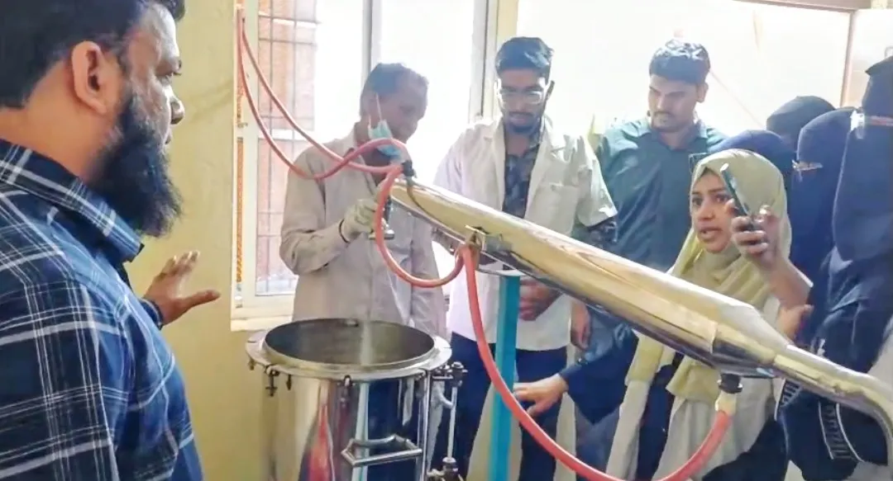

Free hands-on training · Al-Arif Unani Pharmacy
Distillation process,
learnt at the still.
عمل تقطیر
- Held 7 Nov 2026
- 40 BUMS medicos
- GMP-certified unit

Free hands-on training · Al-Arif Unani Pharmacy
عمل تقطیر
Al-Arif General Hospital & Unani Research Institute · Bandlaguda, Hyderabad